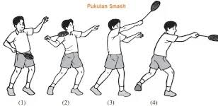

CARA MELAKUKAN SMASH

Smash merupakan pukulan keras yang bertujuan untuk mematikan bola dan mendapatkan poin.
LANGKAH-LANGKAH MELAKUKAN SMASH :
1. Berdiri dengan sikap melangkah menghadap arah net
2. Jika Anda memegang raket menggunakan tangan kanan, pindahkan tumpuan badan ke kaki kanan dan sebaliknya
3. Saat kok berada di atas kepala, pukul menggunakan raket secara cepat dan menukik ke bawah